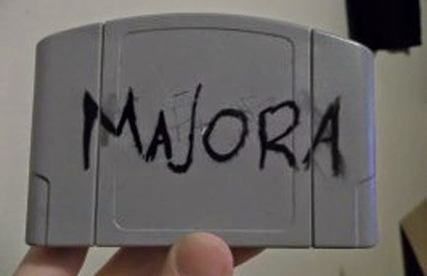
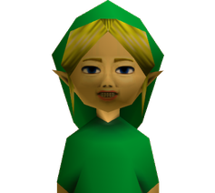
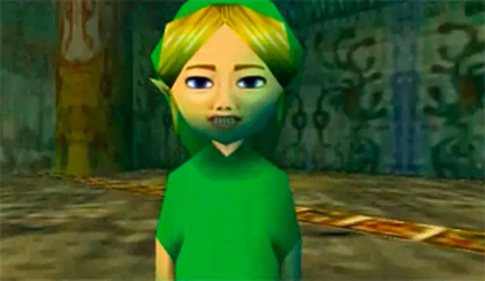
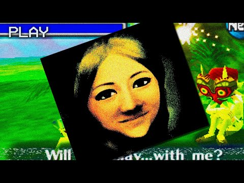
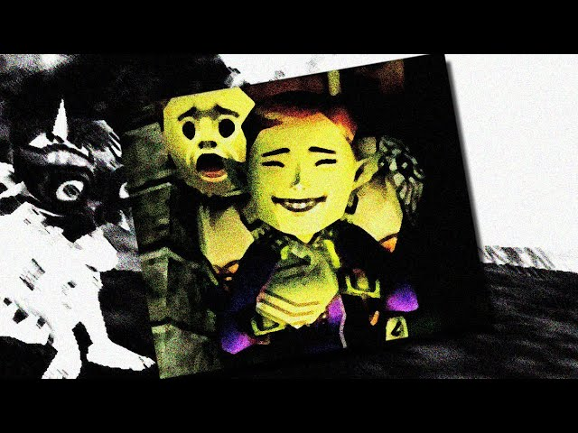
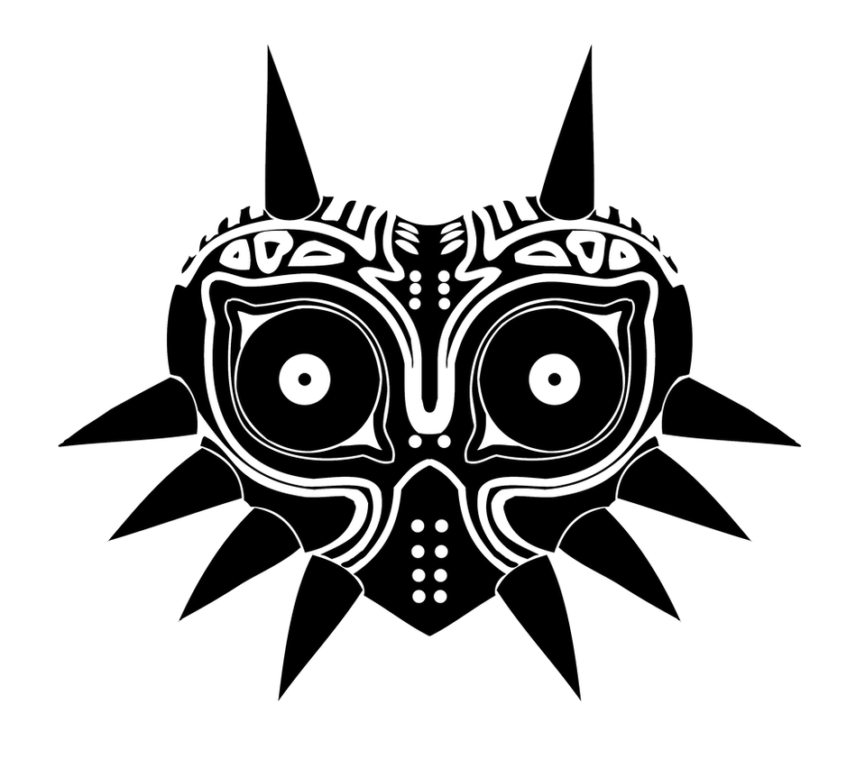

Um senhor misterioso entrega a Jadusable um cartucho cinza sem rótulo com "Majora" escrito à mão.
Mesmo iniciando um novo jogo, os moradores de Clock Town chamam Link de "BEN" e as texturas falham.

A estátua da Elegia do Vazio persegue Link sozinha pelo mapa e invade os pesadelos de Jadusable.

Dois arquivos surgem na tela e revelam que o antigo dono do cartucho morreu afogado.

Por trás da lenda do cartucho assombrado existe uma seita secreta inspirada nas crianças da Lua de Majora's Mask.

O que os membros chamavam de "Ascensão" era um processo de digitalização da consciência humana para um mundo virtual.

As pessoas digitalizadas vivem dentro dos NPCs do cartucho, programadas para acreditar que pertencem ao jogo.
Majora's Mask não foi escolhido por acaso: sua contagem de 3 dias funciona como um sistema de reinício constante.